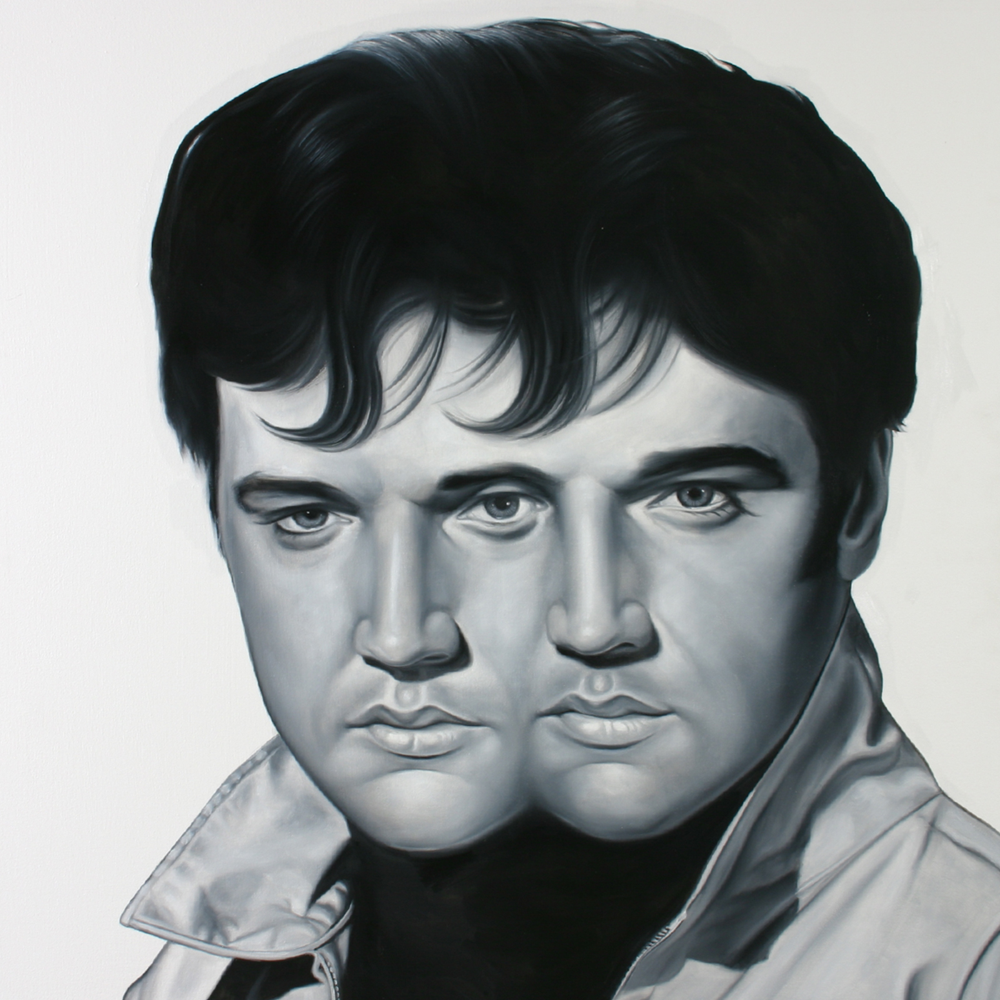
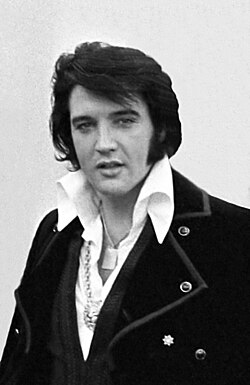
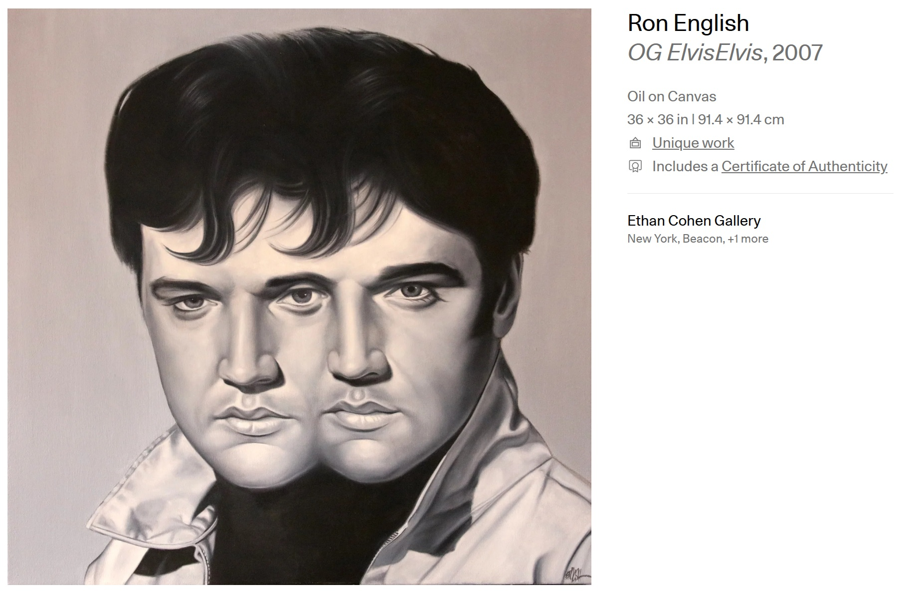
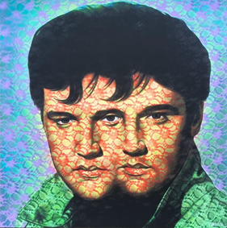
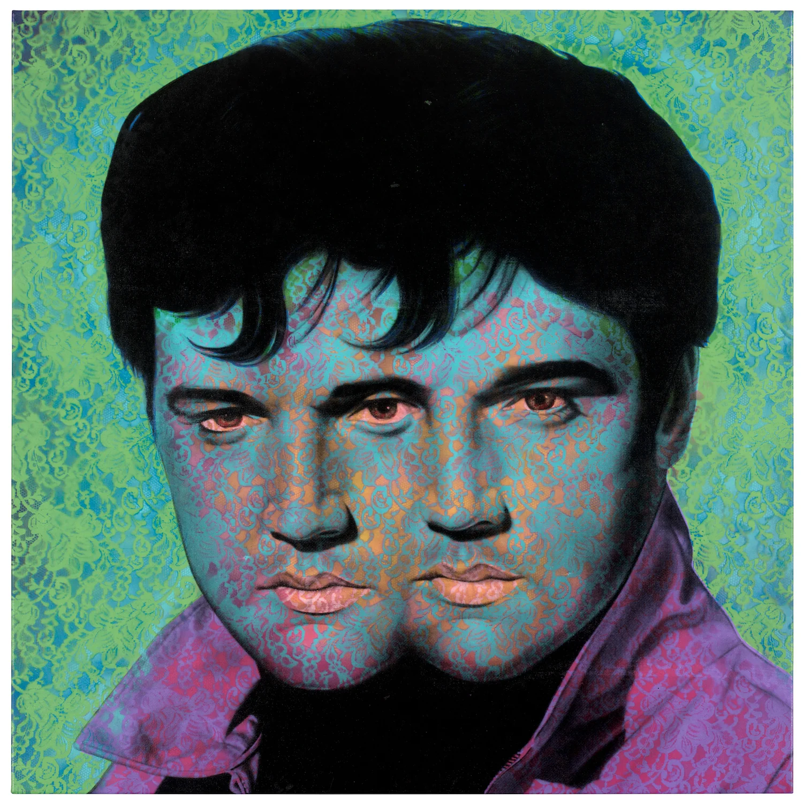
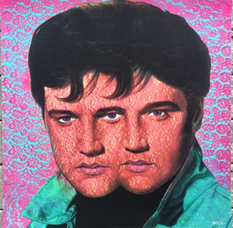

Notes
This work references Elvis Presley.
Artsy documents the work under the title OG ElvisElvis.
This composition was later adapted by the artist in several related print formats, including the 2008 ELVIS ELVIS print variants published by Elms Lesters and a limited-edition print in the Vinyl Chord: A Revolutionary Record Store series.
Ancillary Documentation





